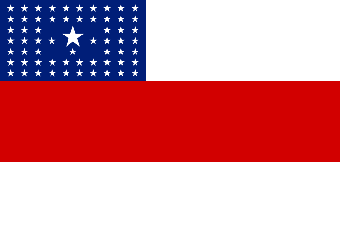
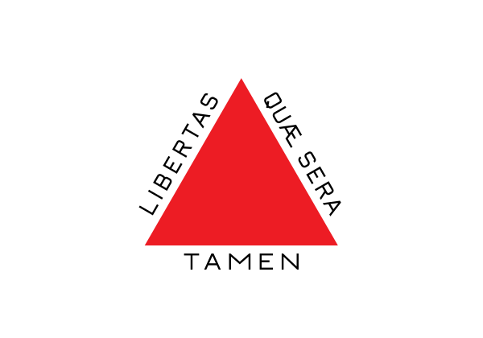
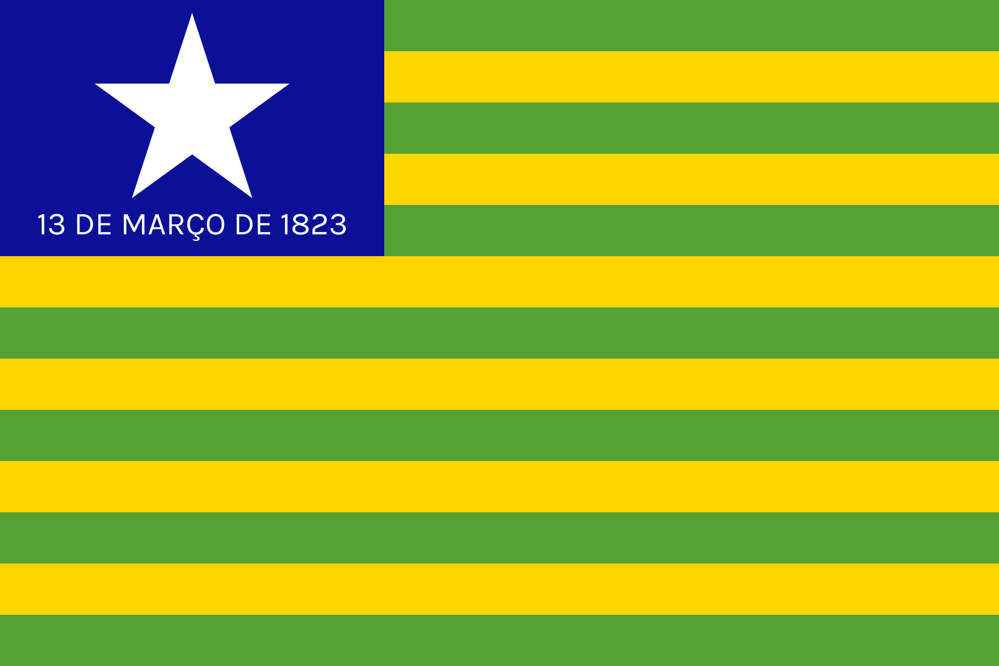
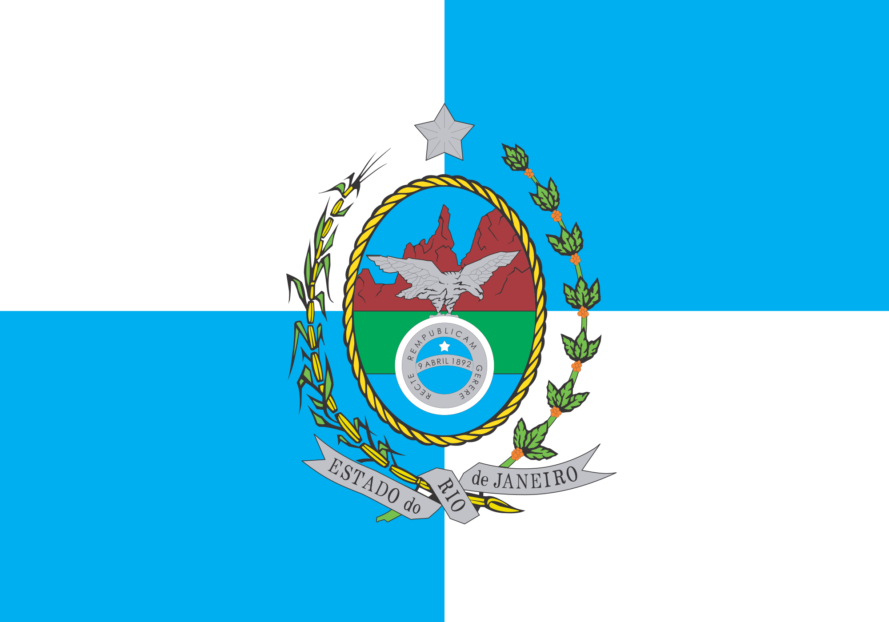
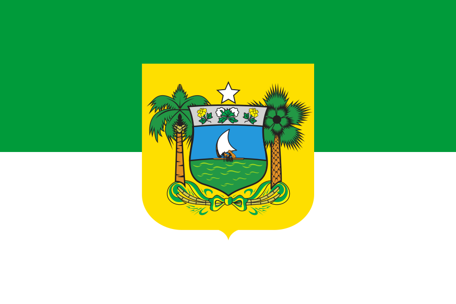
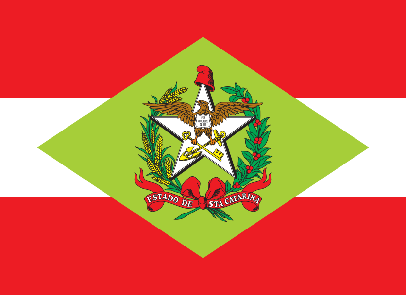
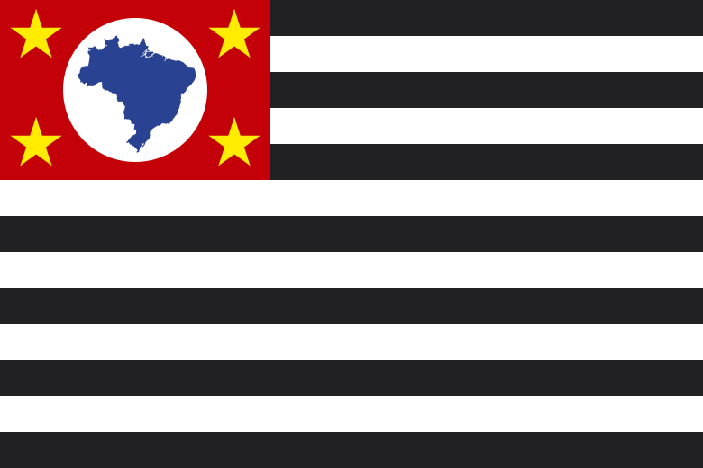

Página estática de demonstração com os valores calculados em 22/09/2026 17:31 — o sistema completo roda localmente (uvicorn app:app --host 127.0.0.1 --port 8000) com leitura/edição do DADOS.xlsx.
Parâmetros Mínimos
Unidades Federativas
Unidades de avaliação — o Espírito Santo possui duas unidades avaliadas separadamente.
| UF | Unidade | Situação | Nota final | Classificação | Ações |
|---|---|---|---|---|---|
| AC | Acre | Instituída | 95.0 | Instituída — seguindo os parâmetros mínimos | Abrir |
| AL | Alagoas | Instituída | 74.5 | Instituída — aderência global insuficiente | Abrir |
| AP | Amapá | Instituída | 91.5 | Instituída — seguindo os parâmetros mínimos | Abrir |
 AM |
Amazonas | Instituída | 100.0 | Instituída — seguindo os parâmetros mínimos | Abrir |
| BA | Bahia | Instituída | 92.5 | Instituída — seguindo os parâmetros mínimos | Abrir |
| CE | Ceará | Instituída | 100.0 | Instituída — seguindo os parâmetros mínimos | Abrir |
 DF DF |
Distrito Federal | Instituída | 93.5 | Instituída — seguindo os parâmetros mínimos | Abrir |
| ES | Espírito Santo — Polícia Penal | Instituída | 100.0 | Instituída — seguindo os parâmetros mínimos | Abrir |
| ES | Espírito Santo — SEJUS/ES | Instituída | 84.5 | Instituída — seguindo os parâmetros mínimos | Abrir |
| GO | Goiás | Instituída | 100.0 | Instituída — seguindo os parâmetros mínimos | Abrir |
 MA MA |
Maranhão | Instituída | 90.0 | Instituída — abaixo do mínimo em dimensão essencial | Abrir |
 MT MT |
Mato Grosso | Instituída | 97.0 | Instituída — seguindo os parâmetros mínimos | Abrir |
| MS | Mato Grosso do Sul | Instituída | 87.5 | Instituída — seguindo os parâmetros mínimos | Abrir |
 MG |
Minas Gerais | Instituída | 95.5 | Instituída — seguindo os parâmetros mínimos | Abrir |
| PA | Pará | Não instituída | — | Não instituída | Abrir |
| PB | Paraíba | Instituída | 85.0 | Instituída — abaixo do mínimo em dimensão essencial | Abrir |
 PR PR |
Paraná | Instituída | 98.5 | Instituída — seguindo os parâmetros mínimos | Abrir |
| PE | Pernambuco | Instituída | 91.5 | Instituída — seguindo os parâmetros mínimos | Abrir |
 PI |
Piauí | Instituída | 80.0 | Instituída — abaixo do mínimo em dimensão essencial | Abrir |
 RJ |
Rio de Janeiro | Instituída | 95.0 | Instituída — seguindo os parâmetros mínimos | Abrir |
 RN |
Rio Grande do Norte | Instituída | 95.0 | Instituída — seguindo os parâmetros mínimos | Abrir |
| RS | Rio Grande do Sul | Instituída | 88.0 | Instituída — seguindo os parâmetros mínimos | Abrir |
| RO | Rondônia | Não instituída | — | Não instituída | Abrir |
| RR | Roraima | Instituída | 100.0 | Instituída — seguindo os parâmetros mínimos | Abrir |
 SC |
Santa Catarina | Não instituída | — | Não instituída | Abrir |
 SP |
São Paulo | Instituída | 100.0 | Instituída — seguindo os parâmetros mínimos | Abrir |
| SE | Sergipe | Instituída | 15.0 | Instituída — abaixo do mínimo em dimensão essencial | Abrir |
 TO TO |
Tocantins | Não instituída | — | Não instituída | Abrir |